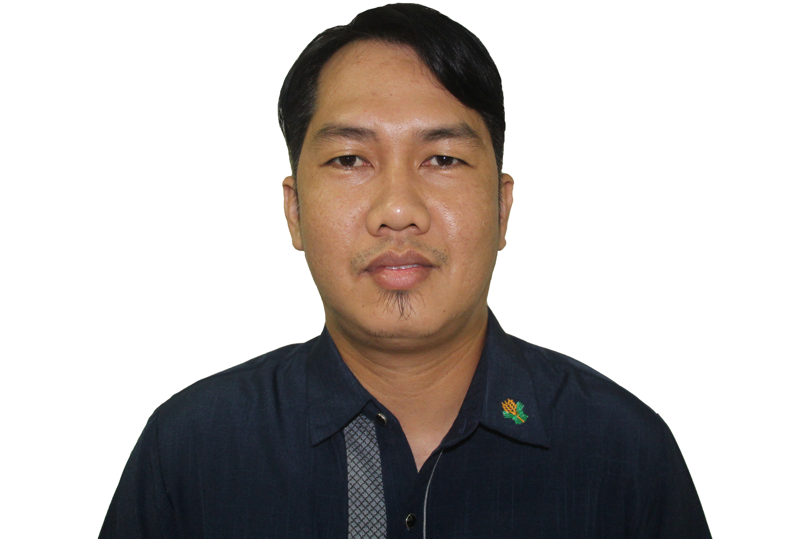

GLENN D. ODTOJAN
Web Developer

Summary:
A hardworking professional that gets the job done, without compromise. Discipline
and committment are my tools to achieve results.
Education:
- Bachelor of Science in Agricultural Engineering - Xavier University in Cagayan de oro City, Philippines
Work Experience:
- Engineer II - Department of Agriculture in Butuan City, Philippines
(August 2017 to present)
- Prepares Detailed Engineering Design (DED ) and Program of Works (POW)
of proposed infratructure projects.
- Conducts pre-engineering activities, like site validation and topographic
survey for the proposed infrastructure projects.
- Engineering Assistant - Butuan City Water District (BCWD) in Butuan City, Philippines
(January 2017 to July 2017)
- Conducts topographic survey using total station on site of the proposed
water pipeline projct.
- Prepares DED for the proposed Water pipeline project under the supervision
of Project Engineers.
- Public Health Inspector - King Abdul Aziz Medical City in Riyadh, Saudi Arabia
(January 2017 to July 2017)
- Conducts daily inspection and monitoring within the hospital buildings and
outside its premises for any pest and infestation.
- Responds to calls from hospital staff about pest sightings or problems and
apply proper ways to rectify the problem.
- Prepares daily reports on the location of any pest incidence indicating the
ways of rectification with recommendations.
Skills:
- Advanced competency in Autodesk Civil 3D
- Intermediate competency in Microsoft Office
- Web Development using HTML
Others: